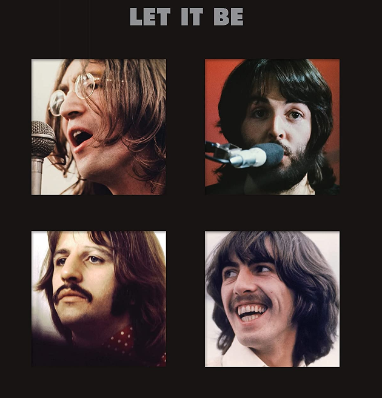

| Chord Name | Finger Position |
|---|---|
| E Major | |
| E Minor | |
| A Major | |
| A Minor | |
| D Major | |
| D Minor | |
| G Major | |
| C Major | |
| F Major |
| Chord Progression | Hear It! | Songs |
|---|---|---|
| C, G, Am, F
This is one of the most popular chord progressions in Western pop music, These chords are actually opposite of each other - the contrast makes it sound good. |
 | |
| C, F, G
This chord progression is the foundation of classic rock 'n' roll and modern rock. Extremely common in songs from the 1960s to the 1970s. |
||
| C, Am, F, G
Also known as the 1950s progression because it was very popular in that decade - this chord progression is associated with the mainstream popularity of the doo-wop genre at the time. Interestingly enough, many modern pop songs use this progression, too. |
||
| Am, F, C, G
This progression begins with a minor chord, so it tends to sound darker and sadder than the other progressions. |